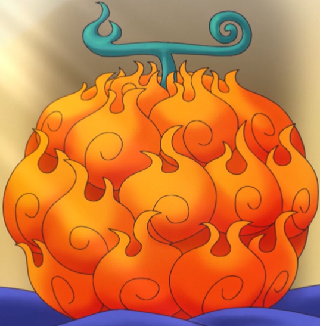
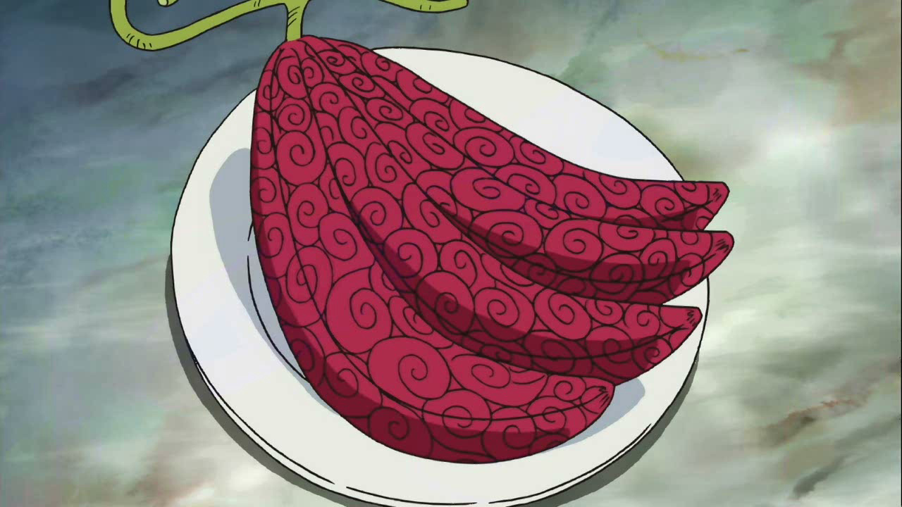
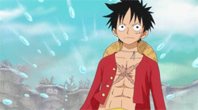
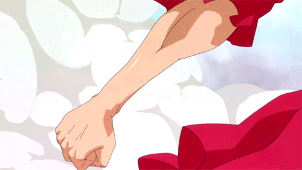

Habilidades Disponibles en el anime
Akuma no mi(Fruta del diablo)
Las frutas del diablo (悪魔の実 Akuma no Mi?) son unos frutos místicos que se encuentran en el mundo de One Piece y otorgan al consumidor una habilidad determinada en función de la fruta que se coma.
Hay algunas que se han mostrado exclusivamente en el anime y otras sólo en el manga (la fruta Shari Shari es la única que ha aparecido sólo en el manga). Sin embargo, la mayoría de ellas han aparecido en ambos, donde juegan un papel crucial para la trama principal de la serie ya que los personajes principales tienen sus poderes.
Paramecia
Éstas frutas dan al consumidor un poder que puede afectar tanto a su cuerpo, como a la manipulación del entorno o la generación de algunas sustancias.

Logia
Una fruta del diablo de tipo logia se caracteriza por brindar a sus consumidores la capacidad de crear, controlar y transformar su cuerpo en un elemento natural.
Zoan
Este tipo de fruta permite al consumidor transformarse en una especie de animal completo y una forma híbrida del animal y su forma original a completa voluntad.
Haki
El haki (覇気 Haki?, lit. «Ambición»), es una fuerza misteriosa que se encuentra en cada ser viviente del mundo de One Piece. No es diferente de los sentidos comunes que la gente normalmente posee. Sin embargo, la mayoría de las personas no lo notan o fallan en despertarlo.
Normalmente, hay dos tipos de haki común en todos dado el entrenamiento adecuado, mas hay un tercer tipo de haki que solo un reducido grupo de personajes posee. En términos simples, haki es la capacidad de sentir y utilizar la energía espiritual y dominar a los enemigos.
Kenbunshoku haki
El uso de este tipo de Haki le otorga al usuario el acceso a una especie de percepción extrasensorial totalmente independiente de los sentidos físicos, dándole varias habilidades muy útiles. Estas habilidades son grandes aditamentos en la mayoría de las ocasiones, especialmente en combate. A diferencia de otros tipos de haki, el kenbunshoku haki casi no muestra signos visibles cuando es usado. Este tipo de haki funciona mejor cuando se está calmado y concentrado.
Busoshoku haki
El busoshoku haki (武装色の覇気 busō-shoku no haki?, lit. «color de la ambición de armamento») conocido en el País de Wano como ryuo (流桜 Ryūō?, lit. «Flujo de sakura»), es una forma de haki que permite al usuario crear una fuerza similar a una armadura invisible a su alrededor. Al igual que el tekkai, este haki permite al usuario defenderse de los ataques que de otro modo le harían daño. Sólo una fuerza física significativa es capaz de superar esta defensa.
Haoshoku haki
El haoshoku haki (覇王色の覇気 haō-shoku no haki?, lit. «color de la ambición del conquistador») es una forma rara de haki que permite al usuario ejercer su propia fuerza de voluntad sobre los demás. Este tipo de haki no se puede lograr a través de entrenamiento y solo uno de cada varios millones de personas nace con esta habilidad. Se dice que, quienes poseen este tipo de haki, tienen las cualidades para ser un rey, siendo conocidos como conquistadores o gobernantes supremos